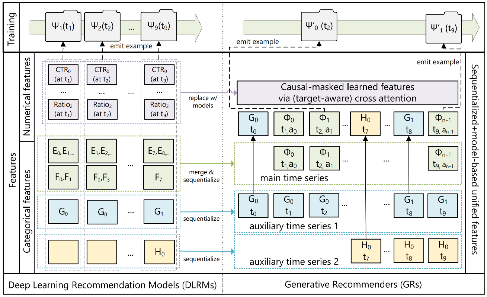
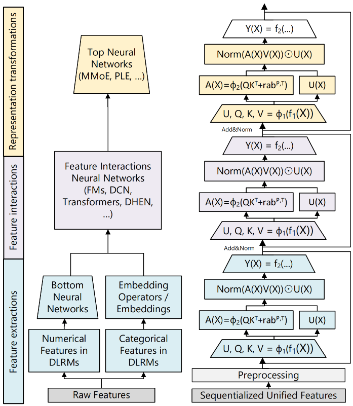
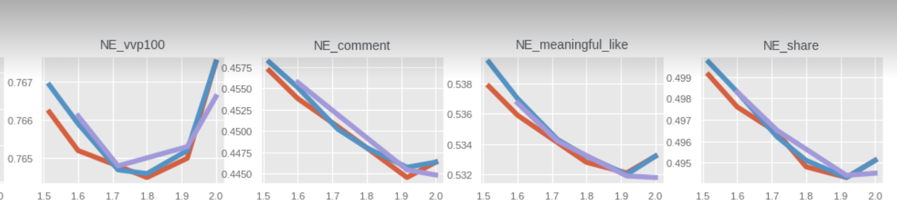
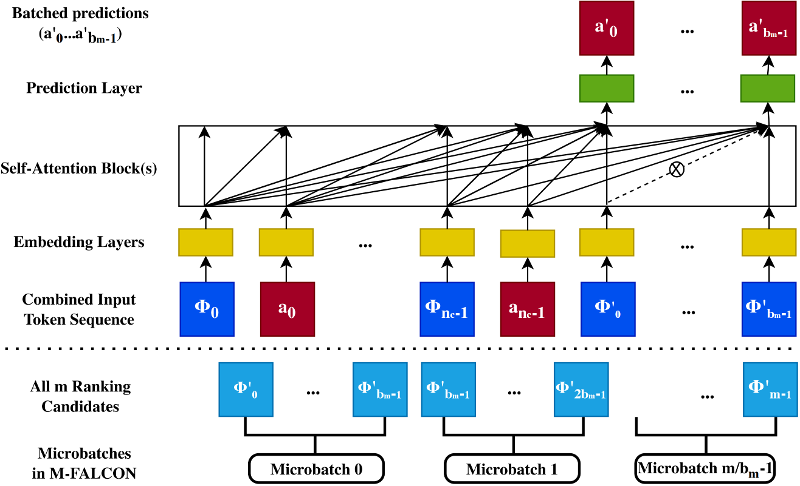
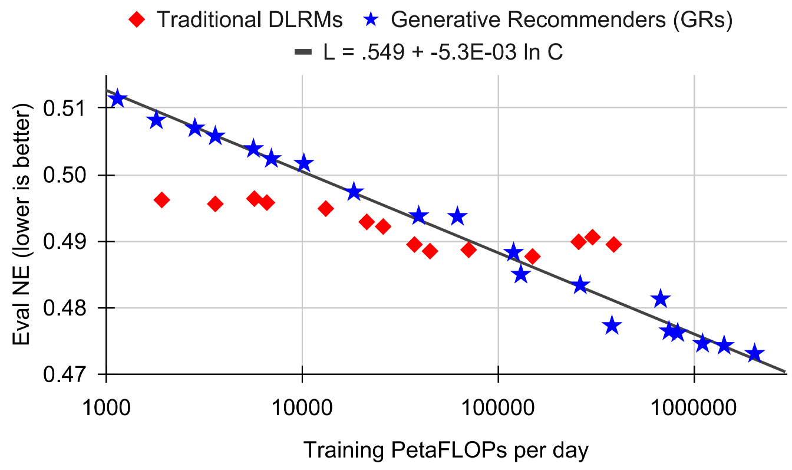
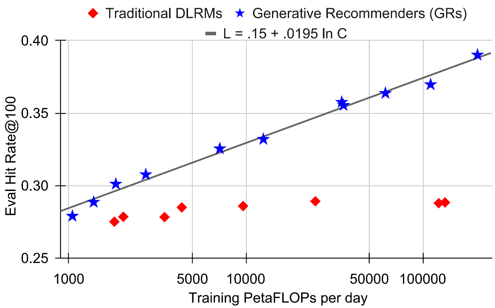

6.1.1. Scaling Law的首次探索¶
过去十年，深度学习在计算机视觉和自然语言处理领域取得了令人瞩目的成就。ResNet将网络深度从几十层扩展到上千层，Transformer模型参数量突破万亿规模，涌现出惊人的智能行为。这些突破背后有一个共同规律：在合适的架构下，模型性能会随着计算量、数据量、参数量的增加而持续提升，遵循可预测的幂律关系 (Vaswani et al., 2017)，这就是著名的scaling law。
推荐系统却成了一个令人困惑的例外。尽管工业界投入了巨大的工程资源，精心设计数千个特征、搭建复杂的Deep Learning Recommendation Model（DLRM） (Mudigere et al., 2022) 架构、每天处理数十亿用户的海量数据，但性能提升总是很快遇到瓶颈。增加模型参数、扩大训练数据，往往只能换来微小的指标改善，有时甚至毫无收益。
问题出在哪里？传统DLRM面临三个根本性限制：
首先是特征瓶颈。DLRM依赖手工设计的数值型特征（如点击率、平均观看时长等统计特征）来压缩历史信息。当增加模型容量时，这些预聚合的特征成为信息瓶颈：模型能力提升了，但输入信息的丰富度没有提升。
其次是架构碎片化。DLRM由异构的模块组成（FM、DCN、DIN、MMoE等），每个模块针对特定类型的特征交互优化。增加某个模块的容量往往只能带来局部改善，难以产生系统性的提升。
最后是训练范式的限制。传统DLRM采用的是item-level建模：对每个候选项独立计算评分\(\text{score}(u, i_j)\)，每个训练样本只对应一个\((user, item, action)\)三元组。这意味着模型每次只能从单个交互中学习一个监督信号，增加模型容量不会增加每个样本提供的信息量。而且，这种范式的计算成本随候选集规模线性增长，独立评分机制也无法捕捉候选之间的关联。
这三个限制共同作用，让传统DLRM难以实现持续的规模化收益。突破这个困境，需要的不仅是工程优化，而是范式的转变。
6.1.1.1. 范式转变：从物品序列到行为序列¶
Meta的研究团队获得了一个关键洞察：如果把用户的行为历史看作一种特殊的“语言”，会发生什么？
在自然语言处理中，GPT等语言模型的成功建立在一个简洁而强大的范式上：给定前文\([w_1, w_2, \ldots, w_t]\)，自回归地预测下一个词\(w_{t+1}\)。这个过程可以持续进行，生成任意长度的文本序列。语言模型之所以能够scale，关键在于统一的序列表示让所有信息都编码在token序列中，自回归训练方式让每个样本提供多个监督信号，而Transformer架构 (Vaswani et al., 2017) 则提供了强大的序列建模能力和参数效率。
那么，能否将推荐问题也formulate成这样的序列任务？这个想法乍看之下很自然，毕竟sequential recommendation并不是新概念，GRU4Rec、SASRec等方法早已将用户的交互历史建模为序列。但这些方法都只关注用户与物品的交互，而忽略了推荐系统中最关键的信息：用户的行为反馈。传统方法只建模物品序列\([\Phi_0, \Phi_1, \ldots, \Phi_{i-1}]\)，预测下一个物品\(\Phi_i\)，却没有考虑用户对每个物品的响应。
Meta团队提出的Generative Recommender（GR）范式，将推荐过程视为两个交织的随机过程：推荐系统展示内容\(\Phi_i\)，用户产生行为反馈\(a_i\)（如点击、点赞、观看时长等）。因此，完整的推荐数据流应该表示为交替出现的内容和行为序列：
这个看似简单的改变，带来了深刻的影响。现在要建模的不再是\(p(\Phi_i | \Phi_0, \ldots, \Phi_{i-1})\)，而是完整的联合分布\(p(\Phi_0, a_0, \Phi_1, a_1, \ldots, \Phi_{n_c-1}, a_{n_c-1})\)。根据概率链式法则，这个联合分布可以分解为：
这个分解立即揭示了推荐系统的两个核心任务。排序任务（Ranking）对应于\(p(a_i | \Phi_0, a_0, \ldots, \Phi_i)\)的建模，即给定用户历史和当前候选物品\(\Phi_i\)，预测用户会产生什么样的行为\(a_i\)。注意这是一个target-aware的建模方式，即模型在看到候选物品后才预测行为。召回任务（Retrieval）则对应于\(p(\Phi_i | \Phi_0, a_0, \ldots, a_{i-1})\)的建模，即给定用户的历史交互，预测下一个应该推荐的物品，这更接近传统sequential recommendation的设定。
但要让这个框架真正发挥作用，还需要解决一个关键问题：如何将推荐系统中五花八门的特征统一到这个序列框架中？
{kind=link}

图6.1.1 DLRM与GR的特征和训练方式对比¶
6.1.1.2. 统一异构特征空间¶
传统DLRM的一个显著特点是特征的异构性和碎片化。一个典型的工业级推荐模型可能使用上千个特征，包括类别型（Sparse）特征和数值型（Dense）特征。
类别型特征如用户ID、物品ID、创作者ID、话题标签、城市、语言等，其基数往往极高，可以达到数十亿。数值型特征如点击率、平均观看时长、各种统计计数、时间衰减权重等，是经过精心工程设计的聚合特征，往往capture了重要的信号。在传统DLRM中，这些特征通过embedding lookup、特征交叉、MLP等不同的模块处理，最终concatenate到一起。这种碎片化的处理方式虽然灵活，却带来了参数效率问题。
Generative Recommender要将这些异构特征统一到序列中，需要巧妙的设计。对于类别型特征，核心思路是时间轴对齐和压缩合并。
首先，识别出变化最频繁的特征作为“主时间线”。在推荐场景中，这通常是用户的交互历史，即用户点击、点赞、评论的物品序列，最能反映用户兴趣的动态演化。
接下来，处理变化较慢的特征，比如用户关注的创作者列表、加入的兴趣社区、常用的城市等。对这些慢变序列，采用一个简单而有效的压缩策略：对于每个连续的相同值段，只保留第一次出现的记录。举个例子，假设用户在一个月内关注的创作者序列是[张三, 张三, 张三, 李四, 李四, 王五, 王五, 王五]，压缩后变成[张三, 李四, 王五]。这种压缩不会显著增加序列长度，因为这些特征本身就变化缓慢。
最后，将压缩后的序列按时间戳合并到主时间线中，得到一个统一的类别型特征序列。
对于数值型特征，则需要更深刻的洞察。数值型特征的变化频率极高，几乎每次交互都可能导致某些统计特征更新。如果完全序列化，序列长度会爆炸式增长，无论从计算还是存储角度都不可行。
但仔细观察会发现，这些数值型特征通常是对类别型特征的聚合统计。比如“用户在科技话题下的点击率”这个特征，本质上是对“用户历史中科技话题物品的点击行为”的统计。而这些被聚合的基础信号（话题标签、点击行为）已经在类别型特征序列中了！
这意味着，如果序列模型足够强大，能够建模足够长的历史，理论上可以从原始的类别型特征序列中自动学习出这些聚合统计特征。这是一个大胆但合理的假设：用足够的模型容量，换取特征工程的简化。
形式化地说，传统DLRM使用的特征空间可以表示为\(\mathcal{F}_{\text{DLRM}} = \{\text{sparse features}\} \cup \{\text{dense features}\}\)，而Generative Recommender将其统一为\(\mathcal{F}_{\text{GR}} = \text{Seq}(\text{sparse features})\)。当序列长度\(n \to \infty\)时，GR的特征空间可以近似覆盖DLRM的特征空间：\(\lim_{n \to \infty} \mathcal{F}_{\text{GR}} \approx \mathcal{F}_{\text{DLRM}}\)。
值得注意的是，完全放弃数值型特征并非没有代价。论文的消融实验显示，当给DLRM baseline也使用相同的“仅类别型特征”配置时，其性能显著下降。这说明在低算力场景下，精心设计的数值型特征仍然很有价值。GR的优势在于：通过大幅增加模型容量和序列长度，它能够从原始交互序列中自动学习出那些手工特征所捕捉的信息，实现了“用算力换特征工程”的取舍。
这个特征统一过程的优雅之处在于：它不仅简化了特征工程，更重要的是为后续的架构创新铺平了道路。当所有信息都编码在一个统一的序列中，我们就可以充分利用Transformer等强大的序列模型架构。
6.1.1.3. 训练效率的飞跃¶
统一的序列表示不仅带来了建模上的优势，更重要的是从根本上改变了训练的计算复杂度。
在传统DLRM的训练中，每个样本对应一次用户与物品的交互\((u, i, a)\)，模型需要将用户和物品的特征组合，计算评分，然后与标签比较得到loss。如果训练集有\(M\)个交互记录，我们需要进行\(M\)次前向传播，产生\(M\)个监督信号。
而在Generative Recommender的框架下，情况发生了根本性的变化。考虑一个用户的完整行为序列\([\Phi_0, a_0, \Phi_1, a_1, \ldots, \Phi_{n_c-1}, a_{n_c-1}]\)，包含\(n_c\)个交互。由于采用了交织式建模，总序列长度\(n = 2n_c\)，内容和行为交替出现。在自回归的训练范式下，这个序列可以提供\(n_c\)个监督信号：在位置0（\(\Phi_0\)之后）预测\(a_0\)，在位置2（\(\Phi_1\)之后）预测\(a_1\)，依此类推。
关键的insight是：这\(n_c\)个预测可以在一次前向传播中并行完成。
在Transformer的自注意力机制中，通过causal mask（下三角mask），可以确保位置\(i\)的token只能看到位置\(0\)到\(i-1\)的信息。一次前向传播实际上隐式地完成了所有前缀的编码：位置0的hidden state编码了\(\Phi_0\)，位置2编码了\(\Phi_0, a_0, \Phi_1\)，依此类推。每个内容token之后的位置都可以用来预测对应的行为，这\(n_c\)个预测共享了大部分计算，都基于同一次前向传播的中间结果。这个设计也解释了为什么target-aware建模方式能够奏效：模型在看到候选内容\(\Phi_i\)后才预测行为\(a_i\)。
从计算复杂度的角度看，这带来了惊人的提升。传统DLRM需要\(M\)次前向传播处理\(M\)个样本，总计算量为\(O(M \cdot C_{\text{forward}})\)。而Generative Recommender中，如果平均序列长度是\(n_c\)，\(M\)个样本可以组成\(M/n_c\)个序列，总计算量为\(O((M/n_c) \cdot C_{\text{forward}})\)。
这相当于将训练的计算效率提升了\(n_c\)倍！在实际场景中，用户的行为序列长度往往可以达到数百甚至上千。举个例子，如果用户平均有500次历史交互，那么训练效率就提升了500倍。这意味着我们可以用同样的计算预算，训练复杂度高一到两个数量级的模型。
这个训练效率的飞跃，是Generative Recommender能够突破传统DLRM scaling瓶颈的第一个关键因素。它为我们提供了足够的计算空间去尝试更深的网络、更大的模型容量。但这还不够。要真正实现scaling law，我们还需要一个专门为推荐场景设计、高效且强大的序列建模架构。
6.1.1.4. HSTU架构：为推荐优化的序列模型¶
有了统一的序列表示和高效的训练范式，下一个问题是：用什么架构来建模这个序列？一个自然的选择是直接使用Transformer，毕竟它在NLP领域已经证明了强大的序列建模能力和良好的scaling特性。但推荐场景有其独特性，直接套用标准Transformer会遇到一些问题。
Meta团队设计的Hierarchical Sequential Transduction Unit（HSTU）架构，针对推荐场景的特点做了三个关键的架构创新。
{kind=link}

图6.1.2 DLRM与GR/HSTU的模型架构对比¶
6.1.1.4.1. Pointwise Aggregation取代Softmax Attention¶
标准Transformer使用的softmax attention机制表示为\(\text{Attention}(Q, K, V) = \text{softmax}\left(\frac{QK^T}{\sqrt{d_k}}\right) V\)，其中softmax归一化确保attention权重和为1，让模型学习的是历史token之间的相对重要性。在语言建模中，这是合理的：给定前文，我们需要判断哪些词对预测下一个词最重要。
但在推荐场景中，我们不仅需要知道哪些历史行为重要，还需要知道它们有多重要。
考虑一个具体的例子。用户A在科技话题下有10次点击，娱乐话题下有1次点击；用户B在科技话题下有100次点击，娱乐话题下有10次点击。用softmax attention，两个用户的attention分布可能非常相似（都是90%的权重在科技，10%在娱乐），但显然用户B对科技内容的兴趣强度远高于用户A。Softmax的归一化抹去了这个绝对强度信息。
HSTU提出用pointwise aggregation替代softmax。根据论文的完整表述，HSTU的attention机制表示为：
其中\(\varphi_2\)是SiLU激活函数（Swish），\(\text{rab}_{p,t}\)是相对注意力偏置，\(\odot\)表示element-wise乘法。完整的HSTU block输出为：
这里\(U(X)\)是一个门控投影。这个设计的关键在于：SiLU将相似度映射到连续的值域但不做全局归一化，每个位置的attention权重保持独立，累加后的总和可以大于1，模型可以学习到“这个用户对某类内容兴趣很强烈”这样的绝对强度信息。
在排序任务中，这个能力至关重要。我们不仅要预测用户是否会点击，还要预测点击后的深度行为（观看时长、点赞等），这些都需要捕捉兴趣的绝对强度。
6.1.1.4.2. 相对位置编码的重新设计¶
在推荐序列中，时间信息极其重要，用户两年前的点击和两分钟前的点击，对当前推荐的影响显然不同。但推荐序列的时间特性与语言序列有本质区别。
语言序列中位置是离散且均匀的。第3个词和第5个词之间的“距离”是2，这个距离的含义在整个序列中是一致的。而推荐序列中时间是连续且不均匀的。两次交互之间可能相隔几秒，也可能相隔几个月。简单的相对位置编码无法很好地capture这种复杂的时间模式。
HSTU引入了一个增强的相对位置bias机制，记为\(\text{rab}_{p,t}\)。它不仅考虑位置关系\(p_i - p_j\)，还考虑实际时间间隔\(t_i - t_j\)。
对于序列中的位置\(i\)和\(j\)，计算一个bias项：\(\text{bias}_{i,j} = f(p_i - p_j, t_i - t_j, \text{type}_i, \text{type}_j)\)，这里的\(\text{type}\)区分了内容token（\(\Phi\)）和行为token（\(a\)）。
这个设计让模型能够学习到：最近的行为比久远的行为更重要，某些类型的行为衰减更快（如浏览vs点赞），内容token和行为token之间的关系与内容token之间的关系不同。这个看似简单的改进，在长序列建模中效果显著，帮助模型更好地权衡不同时间尺度的信息。
6.1.1.4.3. 简化的前馈网络与门控机制¶
标准Transformer在attention层之后会接一个两层的前馈网络（FFN），通常表示为\(\text{FFN}(x) = \text{ReLU}(xW_1 + b_1)W_2 + b_2\)。中间层的维度通常是隐藏层维度的4倍，这导致FFN占据了Transformer大部分的参数和计算量。
HSTU受到最近高效Transformer研究的启发（如GLU variants），采用了一个更简洁的设计，用element-wise的门控机制替代了显式的FFN：
这里的门控函数\(\text{Gate}(X)\)是一个轻量级的变换（如一个单层线性投影加激活）。这个设计有两个好处。
首先是减少参数量和计算量，避免了4倍隐层维度的FFN。其次是降低激活值内存，更少的中间层意味着反向传播时需要保存的激活值更少。
后者在推荐场景中尤为重要。工业级推荐模型需要使用非常大的batch size（可能到达数万甚至数十万）来稳定训练，这时激活值内存往往成为瓶颈。HSTU的设计将每层的激活值内存从标准Transformer的33倍隐层维度降到14倍，使得我们可以在相同内存预算下训练更深的网络。
值得注意的是，HSTU名字中的“Hierarchical”指的是模型可以采用分层的token表示：对于超高基数的类别型特征（如物品ID可能有数十亿），可以将其分解为多个sub-token的序列。但这个层次化设计并非HSTU的核心。后续的研究会揭示，在大多数场景下，flat的token表示已经足够。HSTU真正的价值在于前面提到的三个架构创新。
6.1.1.5. 训练与推理的工程优化¶
6.1.1.5.1. Stochastic Length：利用行为的多尺度冗余¶
即使有了高效的架构，训练超长序列依然是一个挑战。自注意力的复杂度是\(O(n^2)\)，当序列长度达到数千甚至上万时，计算和内存开销都会变得难以承受。
但推荐序列有一个独特的性质：用户行为在不同时间尺度上展现出重复的模式。用户的兴趣不是单一尺度的，它既包含长期稳定的偏好（“我喜欢科技内容”），也包含中期的兴趣演化（“最近一个月在关注AI话题”），还有短期的场景化需求（“今天想看些轻松的”）。这意味着，模型既需要长期历史来捕捉稳定偏好，也需要近期历史来捕捉即时兴趣。
基于这个观察，HSTU提出了Stochastic Length（随机长度）训练技巧。核心思想很简单：对于长度为\(n\)的用户序列，不总是使用完整的序列进行训练，而是以一定概率随机截取一个较短的子序列。
具体来说，如果序列长度\(n\)超过某个阈值\(N_{\alpha/2}\)，那么以概率\(p = 1 - N_{\alpha} / n^2\)，随机采样长度为\(N_{\alpha/2}\)的子序列；以概率\(1-p = N_{\alpha} / n^2\)，使用完整序列。这个概率设计的巧妙之处在于：当\(\alpha = 2\)时，\(p = 1 - N_c^2/n^2\)，对于\(n > N_c\)的序列几乎总是被截断，确保了计算复杂度的上界是\(O(N_c^2)\)。而当选择\(\alpha < 2\)（如1.6-1.7）时，\(p = 1 - N_c^\alpha/n^2\)，即使对很长的序列，也保留了一定概率使用完整历史，防止模型完全“遗忘”长期依赖。参数\(\alpha\)控制了截断的激进程度：\(\alpha\)越小，截断越激进，训练越快；\(\alpha = 2\)时退化为不截断。
子序列的采样也不是简单的随机截取，而是基于特征加权的采样，这确保了采样的子序列能够覆盖不同时间尺度的信息。
Stochastic Length带来了双重好处。
在训练加速方面，自注意力的复杂度从\(O(n^2)\)降低到\(O(N_{\alpha})\)。在实际应用中，通过选择合适的\(\alpha\)（如1.6-1.7），可以将序列稀疏度提升到80%以上，训练速度获得数倍提升。
在正则化效果方面，随机的子序列采样起到了类似dropout的正则化作用，迫使模型不能过度依赖特定的历史模式，而要学习更鲁棒的表示，这反而提升了模型的泛化能力。
实验验证表明，在很大的\(\alpha\)范围内，Stochastic Length对模型质量几乎没有负面影响，有时甚至略有提升。这个意外的发现再次印证了之前的假设：推荐序列在不同尺度上有丰富的冗余信息，模型不需要每次都看完整历史。
{kind=link}

图6.1.3 Stochastic Length在不同α值下的效果¶
6.1.1.5.2. M-FALCON：全局成本分摊的推理算法¶
训练的高效只解决了一半问题。在真实的推荐系统中，推理延迟同样关键。用户打开APP的那一刻，系统需要在几十毫秒内完成候选召回、粗排、精排的全流程。
对于排序阶段，挑战尤为严峻。系统可能需要对成百上千的候选进行精排，每个候选都需要模型给出评分。按照朴素的想法，如果有\(m\)个候选需要评分，我们需要进行\(m\)次前向传播，每次将候选物品拼接到用户历史后面。从attention的计算复杂度看，总计算量是\(O(mn^2d + mnd^2)\)（其中\(d\)是隐藏层维度，\(n^2d\)来自attention的复杂度，\(nd^2\)来自线性投影层）。即使单次前向传播很快，累积起来的延迟也会超出可接受范围。
HSTU团队提出的M-FALCON（Microbatched-Fast Attention Leveraging Cacheable OperatioNs）算法，通过三个层层递进的优化，将这个问题优雅地解决了。
第一层优化：Batched Inference
第一个insight是：可以将多个候选的推理batch在一起。虽然每个候选需要看到用户的完整历史，但如果把\(b_m\)个候选拼在一起，然后修改attention mask，使得候选之间不能互相看到（即\(\Phi'_i\)只能attend到用户历史，但不能attend到\(\Phi'_j\) where \(j \neq i\)），那么这\(b_m\)个候选的评分可以在一次前向传播中并行计算出来。
通过这个简单的trick，计算复杂度从\(O(mn^2d + mnd^2)\)降低到\(O((m/b_m) \cdot ((n + b_m)^2d + (n+b_m)d^2))\)。如果设置\(b_m = m\)（所有候选一起batch），复杂度就变成\(O((n+m)^2d + (n+m)d^2)\)，成功消除了对\(m\)的线性依赖。在推荐场景中，通常\(m \ll n^2/d\)，这带来显著的提升。
第二层优化：Microbatching
但当\(m\)很大时（比如上千个候选），\(b_m = m\)会让\((n+m)^2\)项过大，反而降低效率。这时可以将\(m\)个候选分成\(\lceil m/b_m \rceil\)个microbatch，每个microbatch大小为\(b_m\)。选择合适的\(b_m\)（比如与\(n\)同数量级）可以确保\((n + b_m)^2 \approx 4n^2\)保持在可控范围内，同时microbatch数量也不会太多。这在工程实现上相当于在“全量并行”和“完全串行”之间找到一个甜点。
第三层优化：KV Caching
Microbatching还解锁了另一个重要优化：跨microbatch的KV caching。在Transformer的自注意力计算中，对于用户历史部分，\(K\)和\(V\)在所有microbatch中都是相同的！这意味着第一个microbatch计算时需要计算完整的\(K\)和\(V\)，后续microbatch只需要计算新增候选位置的\(K\)和\(V\)，用户历史部分直接复用缓存。
这将后续microbatch的计算复杂度从\(O((n+b_m)d^2 + (n+b_m)^2 d)\)降低到\(O(b_m d^2 + b_m nd)\)，获得\(2 \sim 4\)倍的加速。更进一步，KV cache可以跨请求复用。在实际服务中，同一个用户可能在短时间内触发多次推荐请求（如滑动刷新），如果将用户历史的KV cache保存一段时间，后续请求可以直接使用。
M-FALCON的三层优化组合起来，效果惊人。在典型的排序配置下（数千长度的用户序列，上千个候选），相比朴素的逐个推理，Batched inference带来数十倍加速，Microbatching + KV caching再带来\(2 \sim 4\)倍加速，综合提升可达数百倍。更重要的是，这让我们可以在相同的延迟预算下，使用复杂数百倍的模型。这是HSTU能够部署万亿参数模型的工程基础。
{kind=link}

图6.1.4 M-FALCON推理算法流程示意图¶
6.1.1.6. 推荐系统的Scaling Law¶
有了Generative Recommender的统一范式、HSTU的高效架构、Stochastic Length的训练加速、M-FALCON的推理优化，所有的技术积木都已就位。现在，是时候回答那个最初的问题了：推荐模型能否像语言模型一样实现持续的scaling？
Meta团队进行了一系列精心设计的scaling实验。他们系统性地增加模型的各个维度：序列长度从512逐步扩展到8192，隐藏层维度从256扩展到1024，网络深度从几层扩展到24层，注意力头数相应增加。
由于推荐模型采用持续的流式训练（streaming training），他们将训练计算量归一化到365天，这样可以与语言模型的训练计算量（如GPT-3、LLaMA-2）进行公平对比。实验在三个核心指标上进行：召回任务的Hit Rate@100和Hit Rate@500，以及排序任务的Normalized Entropy（越低越好）。
当他们将实验结果绘制在对数坐标系上时，一个激动人心的图景出现了：所有指标都呈现出清晰的幂律关系！
模型性能与训练计算量之间的关系可以拟合为\(L = L_0 + \beta \ln C\)，其中\(L\)是模型的性能指标，\(C\)是训练使用的总计算量（以PetaFLOPs per day计），\(L_0\)和\(\beta\)是拟合参数。这个形式与语言模型的scaling law完全一致。根据论文的拟合结果：
召回任务：\(\text{HR@100} = 0.15 + 0.0195 \ln C\)
排序任务：\(\text{NE} = 0.549 - 0.0053 \ln C\)
这意味着，计算量每增加10倍（一个数量级），Hit Rate@100约提升4.5个百分点，Normalized Entropy下降约1.2个百分点。
更令人惊叹的是，这个scaling关系在三个数量级的计算量范围内都稳定成立。从几千PetaFLOPs/day的小规模实验，到十万PetaFLOPs/day量级、接近GPT-3训练规模的超大模型，性能都在可预测地提升。
{kind=link}

图6.1.5 排序任务的Scaling Law实验结果¶
{kind=link}

图6.1.6 召回任务的Scaling Law实验结果¶
这个发现的意义深远。首先，它首次证明了推荐模型的scaling law，推荐不再是深度学习的“例外”，它也遵循compute-optimal的scaling规律。
其次，既然存在scaling law，我们就可以通过小规模实验预测大规模模型的性能，为未来的研发指明了方向，大幅降低研发的盲目性和碳排放。
最后，它打开了推荐foundation model的可能性：既然scaling有效，那么预训练大规模通用推荐模型、然后在不同场景fine-tuning的范式就变得可行。
在最大规模的配置下（8192序列长度、1024维度、24层HSTU），模型的总参数量达到了1.5万亿。这个规模在推荐领域是前所未有的。而更重要的是，这个巨型模型不是停留在论文里的数字，它被成功部署到了Meta的多个推荐场景，服务数十亿用户。
线上A/B测试的结果同样令人振奋。在召回场景，相比已经高度优化的DLRM baseline，HSTU带来了显著的增益。在排序场景，核心指标的提升幅度更是达到了双位数百分比。从图表上看，推荐模型的训练计算量曲线，终于追上了语言模型和视觉模型的曲线。这不仅是技术上的突破，更是范式的转变。
6.1.1.7. 为什么HSTU能够突破？¶
HSTU为什么能够突破传统DLRM的scaling瓶颈？回顾整个技术体系，我们可以看到四个层面的创新相互支撑。
范式的转变是根本。从item-level建模转向user-level建模，从独立评分转向序列生成，这个转变解除了计算成本与候选数量的线性绑定，为增加模型容量提供了空间。
架构的创新是关键。HSTU针对推荐场景的特点，在attention机制、位置编码、前馈网络等多个方面做了针对性设计，相比直接套用标准Transformer获得了显著的效率和效果提升。
工程的优化是保障。Stochastic Length让超长序列训练变得可行，M-FALCON让复杂模型的推理变得高效，激活值内存优化让大batch训练不再是瓶颈。这些工程创新将理论上的可能性转化为工程上的现实。
统一的特征空间是基础。将异构的特征统一到序列中，不仅简化了特征工程，更重要的是让模型可以端到端地学习特征之间的复杂交互，提升了参数效率。
这四个因素缺一不可，正是它们的有机结合，才造就了HSTU的成功。但故事并没有结束。HSTU的成功证明了推荐模型可以scale，但也留下了新的问题：在这个成功中，哪些因素是真正essential的？完全的generative训练是否必需，还是可以有更简化的方案？这些技术如何推广到更复杂的工业场景，比如多任务、多场景的联合优化？这些问题，将由后续的研究来回答。